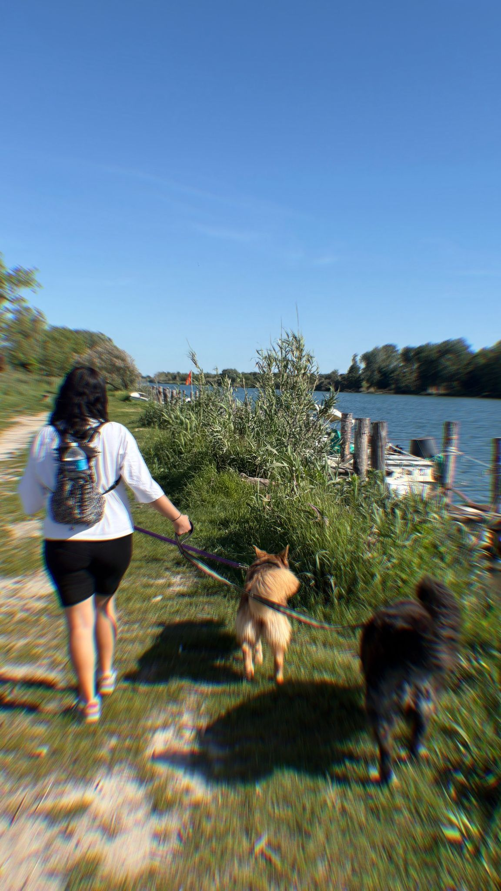

Basta poco per salvarsi a vicenda, perché in fondo una mano e una zampa si distinguono solo dalla forma, ma non dal bisogno di affetto.
Qui le coccole non mancano mai e il rumore preferito è quello delle code che sbattono contro i mobili... o forse quello delle ciotole quando è pronta la pappa? Questo sito non è solo una raccolta di foto, ma il racconto di una rinascita.
Ciao! Mi chiamo Miriana, e quelle che vedi qui a destra sono Pandora e Macchia, due cagnoline senza razza pura che hanno illuminato le mie giornate. Perché ci tengo a sottolinearlo? Perché troppo spesso si dà importanza a etichette come “razza” o “pedigree”, dimenticando che il valore di un cane non si misura dalla sua genealogia, ma da ciò che riesce a trasmettere. Pandora e Macchia ne sono la prova: due storie diverse, due caratteri unici, ma lo stesso impatto profondo nella mia vita. Nel mondo delle adozioni, ogni cane ha un passato e un’identità che vanno oltre l’aspetto esteriore. Scegliere di adottare significa guardare oltre, dare una possibilità e, allo stesso tempo, riceverne una. Perché quello che loro riescono a donare, in termini di fiducia, crescita e affetto, va ben oltre qualsiasi standard di razza. Il mio obiettivo è proprio questo: farvi capire quanto non conti l’estetica, ma ciò che un animale riesce a farvi provare e quanto una vostra scelta possa davvero fare la differenza.

In lei vedo la lealtà dei Pastori. Pandora è un intreccio tra un Pastore Tedesco e uno Shar Pei: forza e sensibilità in un equilibrio unico. Custodisce dentro di sé sia il coraggio di affrontare il mondo sia la capacità di ascoltarlo.
Macchia ha l’energia di un Border Collie e la forza di un Maremmano. È la dolcezza fatta cane, vigile con chi ama ma profondamente affettuosa. Con lei non ci si sente mai soli nei momenti bui.
Spesso si pensa che adottare un cane sia un gesto di carità. In realtà, è un regalo che fai a te stesso. Le mie cagnoline provenivano da situazioni di abbandono, ma dietro quegli occhi impauriti si nascondeva una voglia di vivere incredibile, pronta a venire fuori non appena qualcuno decidesse di crederci davvero.
Adottare non significa solo offrire una casa, ma costruire un legame fatto di fiducia, pazienza e scoperta reciproca.
Significa abbracciare e sentirsi abbracciati.
È un percorso che cambia entrambi, giorno dopo giorno, spesso in modi che non ti aspetti.
Perché scrivere tutto questo? Perché vorrei che capissi che là fuori c’è un’anima che aspetta solo una possibilità, qualcuno che la scelga. E, senza nemmeno accorgertene, sarà proprio lei a trasformare la tua casa in una vera famiglia.
Scoprite le loro incredibili storie e come sono passate dal canile al divano di casa.
Vai alle loro storie →